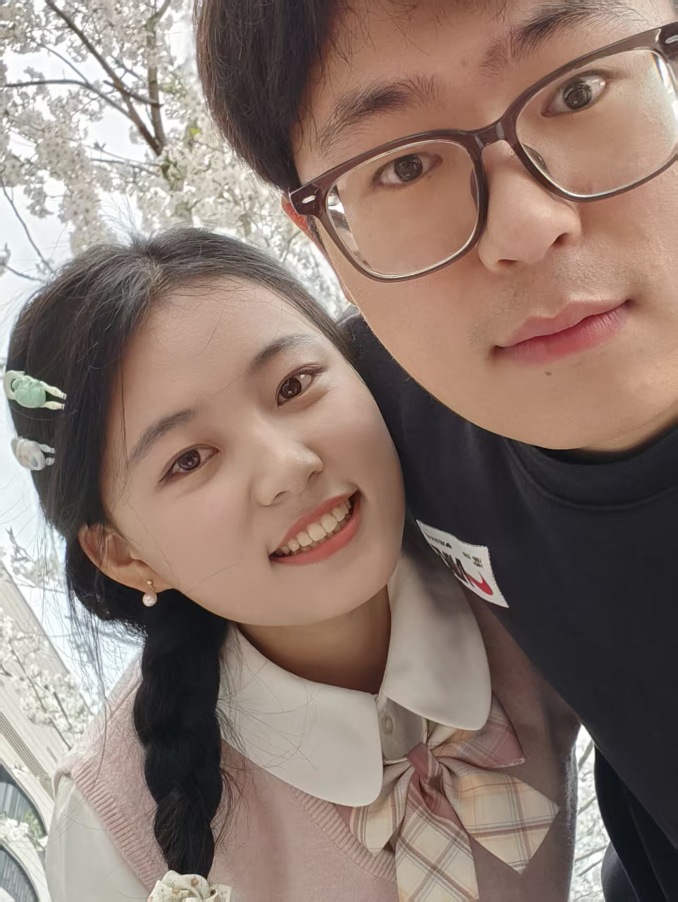
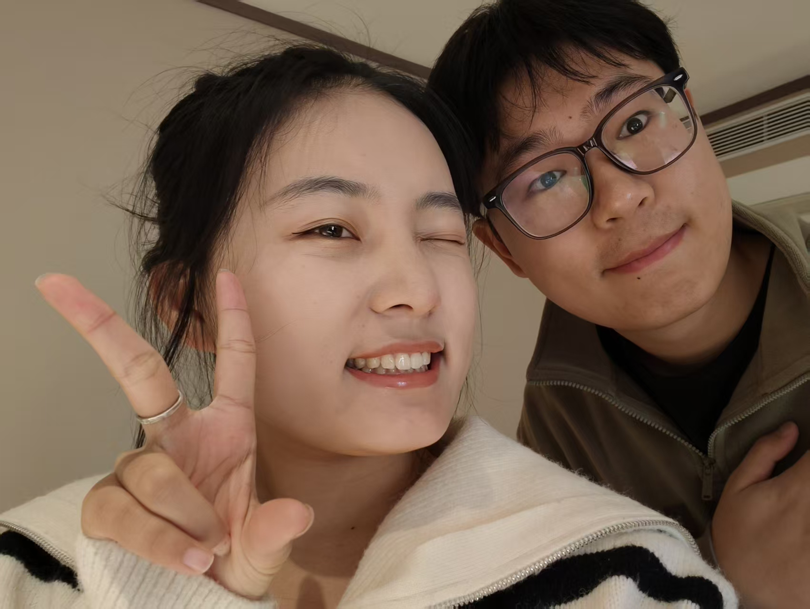

OUR LITTLE UNIVERSE
把日子过成
一封很长很长的信
从 2021 年立春开始，收藏每一次相遇、每一张照片，和那些舍不得忘记的小事。
主角只有两个：开心，还有一直在写故事的人。
2,000+
一起走过的日子
05
个周年纪念
∞
想说的话
SINCE
2021.02.03
snow · 2023
love & days
♡
SCROLL TO REMEMBER
很幸福遇见你✦开心的小宇宙✦把普通的每天收藏起来✦
很幸福遇见你✦开心的小宇宙✦把普通的每天收藏起来✦
FIVE ANNIVERSARIES
五个春天，五次偏爱
从 2021.02.03 的立春开始，我们把喜欢过成了陪伴。每一张周年照片，都是“我依然选择你”的证明。
01
第一年
心动，终于变成了每一天的日常。

第 2 周年照片02-2023.jpg
02
第二年
吵过、笑过，最后还是想牵你的手。
03
第三年
越来越懂你的欲言又止，也越来越懂你的欢喜。

第 4 周年照片04-2025.jpg
04
第四年
把彼此认真写进未来，也把平凡日子过成浪漫。
05
第五年
五年以后，还是会因为见到你而开心。
照片上传后，将按上方文件名放入 assets/images/anniversaries/，对应图片会自动出现在周年卡片中。
LOVE · MEMORY · DAYS
恋爱贴，纪念贴，还有日常贴
不再保留测试内容。这里只写我们：那些想对你说的话、值得纪念的节点，以及认真生活过的普通一天。
FIFTH ANNIVERSARY
2021TO2026♡
纪念贴五周年
五年了，还是想和你
过很多很多年
五年不是热恋的结束，而是我们终于知道：爱是每天都在重新选择彼此。
五周年纪念内容 · 等待放入正式照片
日常
日常贴爱你的每天
希望与你每一天，也期待和你一起看每一场雪。
“
恋爱贴海绵宝宝
总是闭着眼睛数星星，数来数去只有我是派大星
04
纪念贴第 888 天
从 2021.02.03 到第 888 天，原来我们已经一起走了这么远。
# 纪念贴# 888天
05
恋爱贴持续更新
想和你做的
100 件小事
去看海、去旅行、一起做饭，也一起浪费很多个无所事事的下午。
# 恋爱贴# To Do
06
日常贴日常记录
把普通的每天，
写成一封情书
早餐、晚风、散步和晚安。真正珍贵的故事，常常没有多么轰轰烈烈。
# 日常贴# 生活碎片
07
纪念贴2021 — 2026
我们的时间胶囊
收好每一张周年照片和每一句当时没来得及说的话，留着以后一起翻看。
# 纪念贴# 时间胶囊
OUR TIMELINE
从立春出发，
走进第五个春天。
2021.02.03 是故事的起点，也是立春。此后每一年同一天，都成为我们回望时最清晰的坐标。
看我们的五周年
故事开始 · 立春
从这一天起，我的四季里多了一个你。
第一周年
一起走过一轮春夏秋冬，喜欢也变成了陪伴。
第二周年
我们还是我们，并且比从前更靠近彼此。
第三周年
学会了理解、包容，也学会把爱放进细节。
第四周年
未来不再只是各自的计划，而是我们一起的答案。
第五周年
五周年快乐，仍然想和你继续写下去。
未完待续
第六年、第十年、很多很多年以后，还是你。
PHOTO NOTES
镜头替我们，记住那一刻
照片不会说话，但看到它的时候，我们又想起了那天的风、光和心情。
KEEP
SMILE :)
网站的主人
Xiaoyu
故事的另一个主角
ABOUT THIS SITE
这不是作品集，
是一封慢慢变长的信。
“开心是最最最好的！”
网站分成恋爱贴、纪念贴和日常贴，收藏照片、想对你说的话，以及那些看起来微不足道、回头看却很珍贵的小事。
TO BE CONTINUED
很幸福遇见你，开心。
下一篇文章、下一张照片、下一个纪念日，我们慢慢写。
回到最初